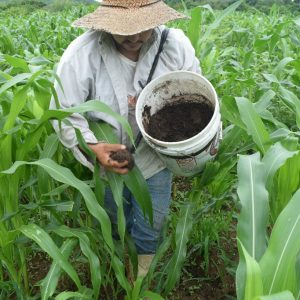
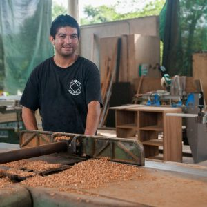
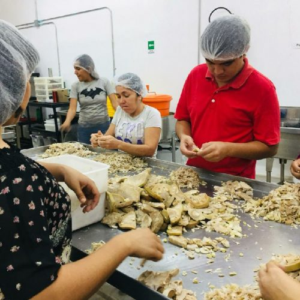
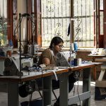

Cultivando Oportunidades
Tu apoyo transforma el destino de los jóvenes a través del trabajo digno y el respeto a la tierra.
"Transformamos el entorno a través del aprendizaje, alejando a los jóvenes de la violencia mediante el desarrollo de destrezas."
Somos una organización con causa, lo que comenzó como un proyecto para conformar una Sociedad De Producción Rural, se ha convertido en un espacio donde compartimos Habilidades Para La Vida, el sueño de brindar oportunidades para alejar a los jóvenes de actividades delictivas.
En un mismo espacio utilizamos las tierras de cultivo para realizar prácticas de agricultura orgánica, avicultura y carpintería. Deseamos inspirar a más personas para que exploten sus habilidades a nivel local y educar a la sociedad para que conozcan el valor del trabajo individual.
Apoya un joven con materiales o pago de instructor
Los jóvenes de Nayarit necesitan tu apoyo para tener mayores oportunidades laborales y alejarlos de las drogas y la violencia.
En TAO de Jade nos enfocamos en capacitar y apoyar económicamente a los jóvenes de la región.
Creemos que los problemas sociales en México se resuelven con educación, es por ello que te invitamos a ser parte de este sueño.
TAO DE JADE - ORGANIC FARM
NEAR CHACALA, MEXICO




